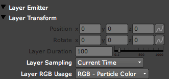
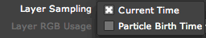
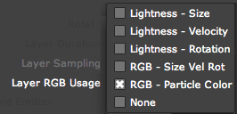

Emitter tab> Layer Emitter group
This group lets you emit particles from image nodes. The Emitter Types of Layer or Layer Grid need to be selected for this group to be active. When Layer Grid is selected, the Grid Emitter group also becomes active.
Unlike the other predefined Emitter Types, the Layer Emitter points to an image node as the particle source. The Layer Emitter can use the RGB or Lightness values from that image to define the area from which particles will be emitted and drive other particle properties. The ability to emit particles from Read nodes in the composition, for instance, is very useful for animations like making particles burst out of a logo.

The Layer Emitter group.
How to identify the image node
Before using the Layer Emitter section, you need to import and select an image Read node to use for particle emission. Basically, you will create a 2D node and connect it to Particular, then use Particular to position it in 3D space.
To add a still image or animated file to your composition, go to Import> Add Mode> Image> Read. Alternately, you can drag-and-drop an image into the Node pane. If you are importing an animated file, we recommend using image sequences instead of movie files since Nuke has more difficulty managing movie files.
To use your image as the Layer Emitter, first connect the image Read node to the Emitter input port of Particular. Then select Normal mode from the Rendering> Transfer Mode control.
Layer Transform> Position x, y, z
Sets the position of the Layer Emitter particles. Input the X, Y and Z coordinates in their text fields. You can animate these properties by clicking the Animation button.
Layer Transform> Rotate x, y, z
Sets the rotation of the Layer Emitter particles. Input the X, Y and Z coordinates in their text fields. You can animate these properties by clicking the Animation button.
Layer Transform> Duration
Duration sets how many frames of the imported image should be recognized.
If you have imported a still image like a JPEG, that Duration would be 1 frame. Technically, you don't have to set Duration for a still image, because Particular will just repeat that single frame forever.
For an image sequence or video, you can tell Particular how many frames that sequence or video is. For a 4 frame animation, set Duration to 4. For a 170 frame animation, set Duration to 170.
Alternately, you can decide how many of those frames you want Particular to pay attention to. Let's say you imported a 170 frame animation, but you only want to use half of the animation. Set Duration to 85 if you want to look at only the first 85 frames.
Layer Sampling
Defines whether the image should be read at the particle's birth time only, or continuously updated at each frame.

There are two Layer Sampling options:
• Current Time is selected by default. This option is good for an image that has no animation and/or the content is the same on every frame.
• Choose the Particle Birth Time option if you want to emit particles based on an image that has animated content.
Layer RGB Usage
The Layer RGB Usage control defines how the particle size, velocity, rotation and color are changed by the RGB values or lightness of the Layer Emitter content.

There are six Layer RGB options:
• Lightness - Size. The particle size is modified by the lightness value at each pixel. Black pixels result in a particle size close to 0, making them nearly invisible. Completely white particles will be created at the particle size specified in the Particle> Particle Size control. Gray values between black and white result in particles size proportionally between 0 and the value in the Particle Size control. For example, a 50% gray lightness value will result in a particle size that is 50% of the particle size value.
• Lightness - Velocity. The particle velocity is affected by the lightness. If lightness is less than 50%, the particle will emit backwards. If lightness is exactly 50%, velocity will be 0. Above 50%, the particles will emit forwards.
• Lightness - Rotation. The particle rotation is affected by the lightness. Lightness values that are less than 50 percent white (127 or less) will have negative rotational momentum. Values greater than 127 will have positive rotational momentum.
• RGB - Size Vel Rot. A combination of the preceding menu options, this choice uses the R (Red channel) value to define the particle size, the G (Green channel) value to control velocity, and the B (Blue channel) value to control rotation.
• RGB - Particle Color. The default choice. This menu choice uses the RGB color information at each pixel to determine particle color.
• None. Choose this option to set the particle emission area. You need to have an image Read node attached since its alpha channel is used for emission. This option will let the particles take on Color, Velocity and other slider properties, but the actual location of particle emission is set by the image Read node and the 3D properties in Particular.